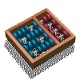

Atividade 2 - Economizando energia via Deep Sleep:
|
 |
Atualizado em 15/04/2019
(i) Deseja-se registrar na memória RTC do esp8266, de forma compacta, os seguintes dados
obtidos pelo sketch no esp8266 entre sucessivas ocorrencias de "Deep Sleep":
hh:mm:ss dia,mes,ano, humidade, temperatura e luminosidade.
Apenas um registro deve ser gravado entre sucessivas ocorrencias de Deep Sleep.
(O primeiro bucket pode ser usado para conter um contador de registros gravados até o momento:
veja no sketch http://www.ic.unicamp.br/~celio/mc853/sketches/RTCmemDebug1.ino).
(ii) Após a gravação do último registro na memória do RTC um "log textual" deve ser gerado contendo
uma linha para cada registro com o formato, digamos, "hh:mm:ss - dia-mes-ano temperatura humidade luminosidade",
que deve ser exibida no Monitor Serial do Arduino.
As gravações de registros devem continuar, começando agora pela primeira posicão da memória do RTC.
Obs: na forma atual o log não seria muito útil, pois os registros não estão correlacionados entre si
e não precisariam ser gravados na memória do RTC pois sua forma textual poderia ser simplesmente enviada
para o Monitor Serial ou "publicada" num broker. Por outro lado, se quisermos registrar estatísticas interessantes como:
data e hora da maior e menor temperatura, idem para humidade, idem para luminosidade, a situação seria bem diferente
e a gravação na memória do RTC seria necessária.
(iii) Após gerar o log seu sketch deve calcular as estatísticas citadas, exibi-las no Monitor Serial e publicá-las
no broker mqtt mosquitto da xaveco.lab.ic.unicamp.br, sob o tópico /RA1-RA2/, (com os RAs do seu grupo).
Isto pode ser feito com apenas uma varredura dos registros na memória do RTC, inicializando de forma
apropriada as 6 variáveis para cálculo dos valores máximos e mínimos desejados.
Sugestão: copie e cole o "log" exibido no Monitor Serial num arquivo e faça um programa em Python
para obter as estatísticas. Após depurá-lo traduza-o pra C e incorpore no seu sketch do esp8266.
Importante: apenas neste momento o Wifi deve ser ativado e a tranmissão para o broker ser feita.
O Wifi deve ser então deconectado. Observe que somente após: número de entradas no RTC x tempo entre
sucessivos Deep Sleeps, o Wifi seria ativado, permitindo assim minimizar o consumo de energia.